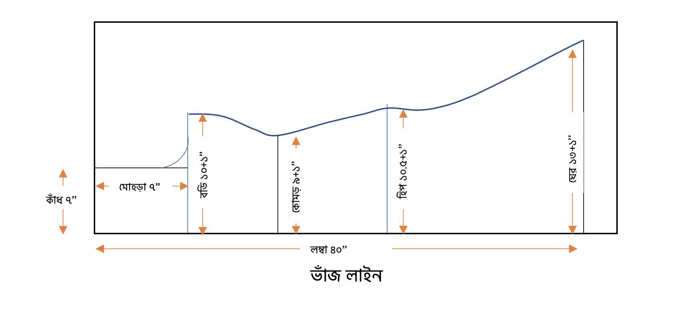
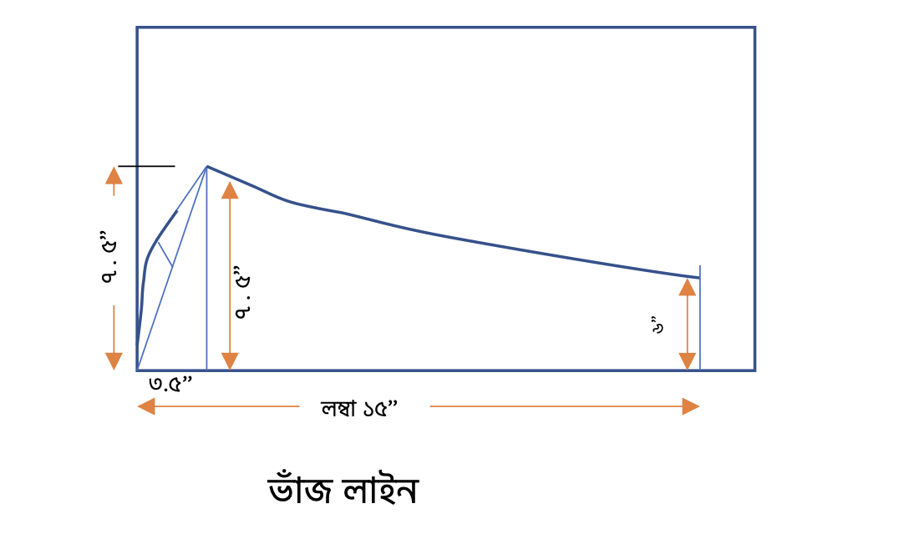
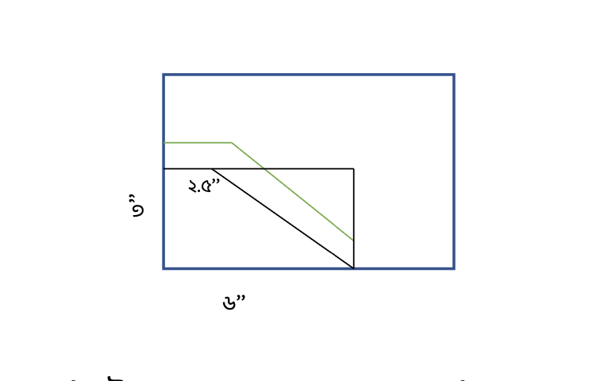

রেগুলার কামিজ প্যাটার্ন ডায়াগ্রাম
নোটস:
লম্বা – ৪০ ইঞ্চি
কাঁধ – ১৪ ইঞ্চি ( অর্ধেক ৭ ইঞ্চি)
মোহরা – ৭ ইঞ্চি (কাঁধের অর্ধেক)
বডি – বডি মোহরার ঠিক নিচেই একদম বুক বরাবার। ৪০ ইঞ্চি (ফিতা দিয়ে মেপে ৩৬
ইঞ্চি, তার সাথে ৪ ইঞ্চি যোগ করতে হবে)। যেহেতু চার ভাজের কাপড় তাই ৪ দিয়ে
ভাগ করতে হবে। ৪০/৪ = ১০ ইঞ্চি + ১ ইঞ্চি সেলাইয়ের জন্য।
কোমড় – কোমড় সাধারণত নাভীর ২ ইঞ্চি উপরে হয়। এখানে কাঁধ থেকে ১৩ ইঞ্চি
নেয়া হয়েছে (বা বডি থেকে ৬ ইঞ্চি নিচে)। কোমড়ের ফিটিং হচ্ছে ৩২ ইঞ্চি, তার
সাথে ৪ ইঞ্চি যোগ করলে সর্বমোট ৩৬ ইঞ্চি। তাহলে ৩৬/৪ = ৯ ইঞ্চি + সেলায়ের
জন্য ১ ইঞ্চি।
হিপ – জামার ফাঁড়া অংশটা যেখানে পড়বে সেটাই হিপের মাপ। সাধারণত কাঁধ থেকে
১৮ ইঞ্চি টু ২২ ইঞ্চি । হিপের ফিটিং এখানে ৩৮ ইঞ্চি, এটার সাথে ৩ ইঞ্চি
যোগ করতে হবে। ৪১/৪ = ১০.২৫ ইঞ্চি + ১ ইঞ্চি সেলায়ের জন্য।
ঘের – ঘের যেকোন পরিমাপ হতে পারে। এখানে ২৬ ইঞ্চি নেয়া হয়েছে। ২৬/২ = ১৩
ইঞ্চি।
হাতার পরিমাপ:

রেগুলার কামিজ হাতার প্যাটার্ন ডায়াগ্রাম
মোহরার পরিমাপ যেটা হবে সেটার সাথে আরো অর্ধ ইঞ্চি (১/২) যোগ করতে হবে।
মোহড়া যেহেতু ৭ ইঞ্চি ছিলো, সেজন্য ৭.৫ ইঞ্চি নেয়া হয়েছে।
৩.৫ ইঞ্চি পর আরেকটা ৭.৫ ইঞ্চি দাগ টানতে হবে। (৩২ থেকে ৩৮ বডির জন্য
সোয়া ৩ ইঞ্চি, ৪০ থেকে ৪৬ পর্যন্ত ৩.৫ ইঞ্চি, ৪৬ এর উপরে ৪ ইঞ্চি)।
তারপর দুটো ৭.৫ ইঞ্চির মাঝখানে হাতার জন্য শেপ দিতে হবে।
হাতার লম্বা এবং ঘেরের পরিমাপ নিতে হবে।
শর্ট হাতা ৮ ইঞ্চি পর্যন্ত হয়। থ্রি কোয়ার্টার হাতা ১৩ ইঞ্চি পর্যন্ত হয়।
ফোর কোয়ার্টার হাতা ১৭ ইঞ্চি পর্যন্ত হয় আর ফুল হাতা ২০ থেকে ২২ ইঞ্চি
পর্যন্ত হয়ে থাকে।
গলার ডিজাইন:

কামিজের গলার প্যাটার্ন ডায়াগ্রাম
কাপড় দুই ভাজে থাকবে (ফ্রন্ট এবং ব্যাক আলাদা করবো)।
কাঁধ বরাবর গলার দূরত্ব ৬ ইঞ্চি, সেজন্য ৬/২ = ৩ ইঞ্চি নেয়া হয়েছে।
গলার নিচের দিকে ডেপথ (গভীরতা) ৬ ইঞ্চি নেয়া হয়েছে।
তারপর ডিজাইন অনুযায়ী গলা কাটতে হবে।